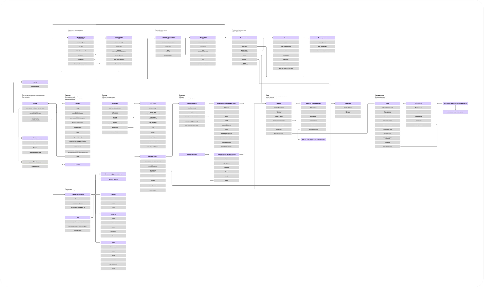
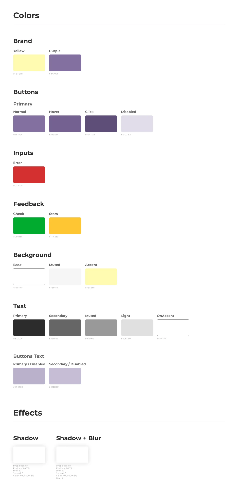
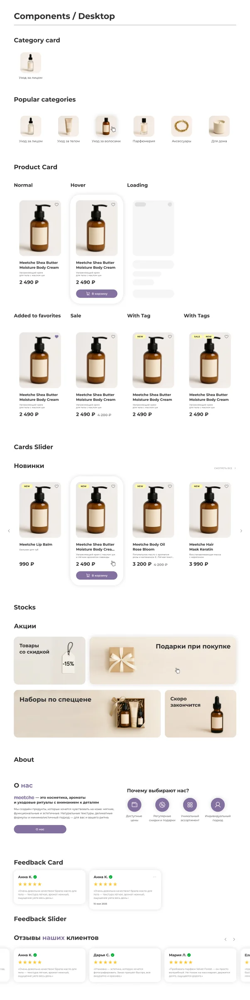
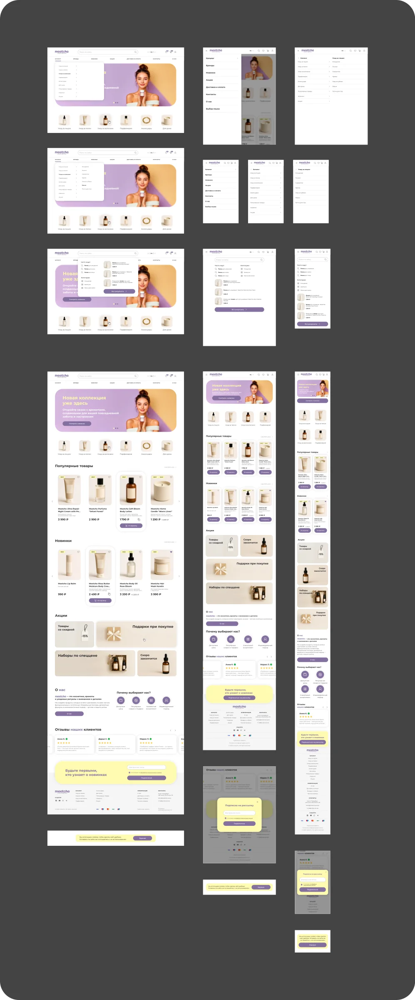
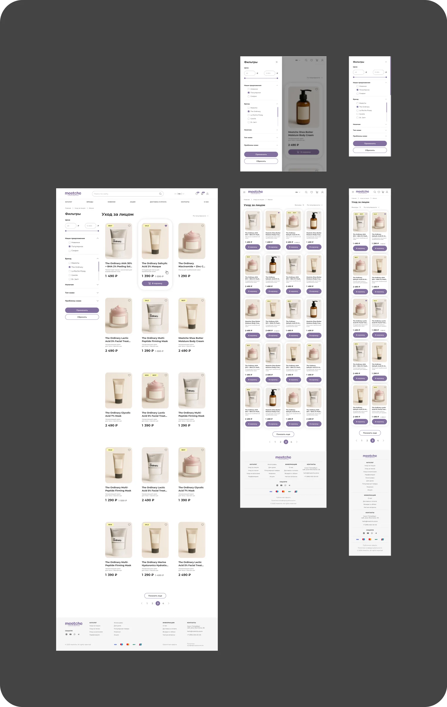
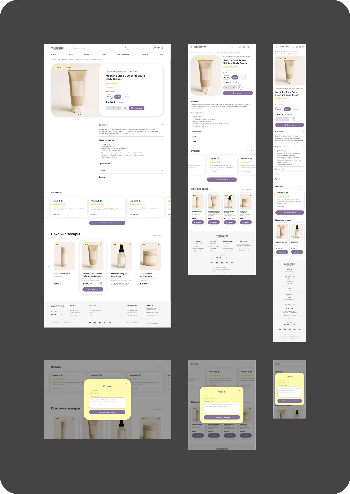
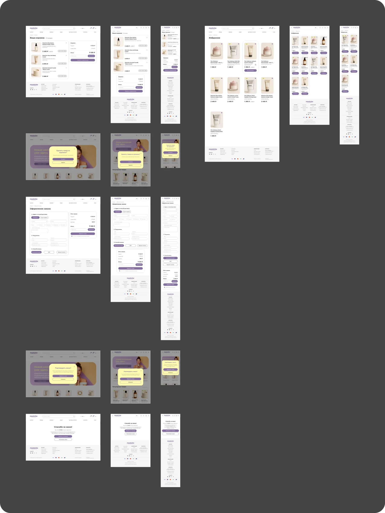
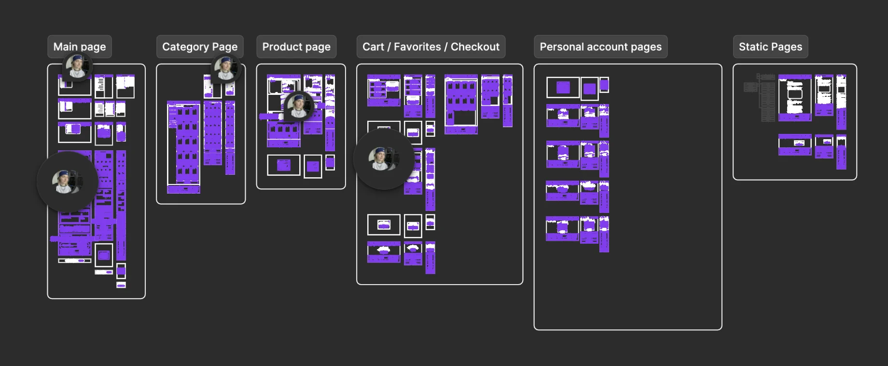

Собрать структуру магазина
Разложить большой объём страниц и состояний в понятную систему.
Web design · e-commerce · Фриланс · 2025
Многостраничный магазин косметики, собранный на единой структуре и компонентной системе.

Обзор
Для интернет‑магазина косметики я спроектировала полный путь покупки, все основные страницы и состояния интерфейса, собрала UI kit и подготовила макеты к передаче в разработку.
Задачи
Разложить большой объём страниц и состояний в понятную систему.
Связать поиск, каталог, товар, корзину и оформление заказа.
Собрать компоненты, варианты состояний и понятную структуру файла.
Что сделала
До отрисовки экранов я описала состав страниц и все переходы между каталогом, товаром, корзиной и оформлением заказа.

Я зафиксировала цвета, типографику, отступы и эффекты, а повторяющиеся элементы собрала в компоненты и варианты состояний.


Дальше я собрала ключевые страницы по этапам пути: знакомство с магазином, выбор категории, изучение товара и покупка.




В финале я привела файл в порядок, описала поведение элементов и оставила комментарии для верстальщика.

Результат
Получился многостраничный e‑commerce‑макет, в котором покупательский сценарий, адаптивные версии и компоненты собраны в одну систему.
От главной и каталога до корзины и оформления.
Все повторяющиеся элементы и состояния связаны между собой.
Структурированный макет со спецификациями и комментариями.